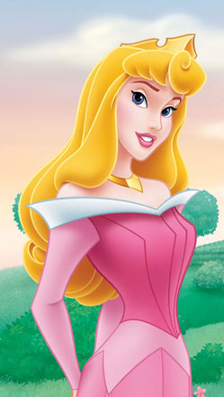
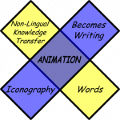

I’ve been struggling lately trying to figure out what I mean by animation and how it relates to cartoons, games, diagrams and Edward Tufte. There is, I think, a thread that links strategy gaming to the representation of people (or their bubble-enshrouded thoughts) as abstracted collections of lines and filled spaces that focus on process. That’s the whole point of my theoretical Animated Clearinghouse of Verbs and Processes that you can see in all its Youtube glory at Animated Ancient China II. But if we’re just talking about filled spaces and lines, well there should be no difference between these two princesses:
Queen Kristie from Sveden

But we inherently know that the princess on the left is somehow different from the princess on the right. We have all manner of details of the princess on the left, most notably that she was tricky from day one and that she had a proclivity for killing famous French philosophers, and know very little about the one on the right. But beyond that intuitive sense of difference and to some scheme for describing how cartoons like Sleeping Beauty are media for the relaying of particular types of knowledge and somehow including within that media the video games that make up so much of modern life requires serious analysis. I’m not a media studies kind of person, but I am a fan of MacLuhan and his concept of the tetrad, wherein one attempts to define the basic characteristics of a particular medium and its suitability for knowledge transmission. To whit, I propose the Animation Tetrad:
g3207


So, Aurora, like a doughty space marine from Bughunter, isn’t so interesting and valuable on its own, but as part of a non-lingual process for relaying knowledge. Now, the knowledge being passed along in Bughunter isn’t as complex as the process for refining uranium for use in a nuclear reactor to create electricity, but it does share the same abstraction regarding details of individual objects with a focus on the system itself. Ultimately, as we grow more comfortable with the creation of animations, we move away, according to this tetrad, from those pesky words, and move toward complex non-lingual communication of knowledge. Imagine if Einstein had been exposed to that simple, 45-second Areva commercial (Probably a better scenario than exposure to Bughunter, we can all be sure) and I think the possibilities for complex theory and practice (known as praxis) relayed with little or no actual text becomes more and more possible. As a historian, I recognize that this has happened before, especially in the use of art to relay religious truths to a laity illiterate in Latin. Wikipedia boasts of articles in dozens of languages, but animation allows for an escape from the constraints of the vernacular (Possibly, with an institution of a new vernacular based on symbology that may one day become so complex that it constitutes a language that would need just as much training to understand as those that it replaces, hence the reversing characteristic in the tetrad). So the next time you’re playing Rome: Total War, maybe you should think of it as Rossetta Stone for learning the animated language of knowledge transfer. How’s that for ruining your gaming experience?
This entry was posted on Tuesday, March 17th, 2009 at 8:30 AM and is filed under Academia, Art, Digital Innovation. You can follow any responses to this entry through the RSS 2.0 feed. Both comments and pings are currently closed.